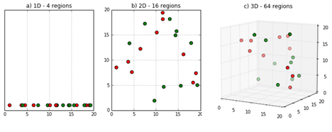

10 - Matching#
What is Regression Doing After All?#
지금까지 살펴본 것처럼 회귀는 실험군과 대조군 비교를 할 때, 추가적인 변수들을 제어하는데 놀라운 역할을 합니다. 조건부독립 가정을 만족한다면(\((Y_0, Y_1)\perp T | X\)), 회귀는 X를 통제함으로써 ATE를 식별할 수 있습니다. 회귀는 일종의 마법과 같습니다. 이에 대한 몇 가지 직관을 얻기 위해 모든 변수 X가 더미 변수인 경우를 상기해보겠습니다. 이 경우 회귀는 데이터를 더미 셀로 분할하고 실험군과 통제군 간의 평균 차이를 계산합니다. 이 평균 차이는 X 더미의 고정 셀에서 수행하기 때문에 X를 일정하게 유지합니다. 마치 우리가 해왔던 것처럼 \(E[Y|T=1] - E[Y|T=0] | X=x\)로 구할 수 있으며, \(x\)는 더미 셀을 의미합니다(예를 들어 모든 더미는 1로 고정된 경우). 그런 다음 회귀는 각 셀의 추정치를 결합하여 최종 ATE를 생성합니다. 이것를 수행하는 방법은 해당 그룹의 처리 분산에 비례하여 셀에 가중치를 적용하는 것입니다.
Show code cell source
import warnings
warnings.filterwarnings('ignore')
import pandas as pd
import numpy as np
from matplotlib import style
from matplotlib import pyplot as plt
import statsmodels.formula.api as smf
import graphviz as gr
%matplotlib inline
style.use("fivethirtyeight")
예를 들어, 남자 6명과 여상 4명이 있을 때, 약물의 효과를 추정하려고 합니다. 반응변수는 입원 일수이고, 약을 섭취했을 때 입원 일수가 낮아질 것으로 기대합니다. 남성의 경우 실제 인과효과가 -3입니다. 즉, 약물을 투여했을 때 입원 일수를 3일 단축시킵니다. 여성의 경우 -2입니다. 다만 남성은 질병에 영향을 훨씬 더 많이 받고 병원에 더 오래 머무르는 경향이 있으며, 훨씬 많은 약을 섭취합니다(6명 중 1명만 약물 섭취). 반면 여성은 질병에 내성이 있기 때문에 병원에 오래 머무르지 않는 경향이 있습니다. 또한 여성의 50%가 약을 섭취합니다.
Show code cell source
drug_example = pd.DataFrame(dict(
sex= ["M","M","M","M","M","M", "W","W","W","W"],
drug=[1,1,1,1,1,0, 1,0,1,0],
days=[5,5,5,5,5,8, 2,4,2,4]
))
실험군과 대조군의 단순한 비교는 부정적으로 편향되어 있습니다. 즉, 약이 실제보다 덜 효과적인 것처럼 보입니다. 이것은 우리가 성별이라는 교란요인을 생략했기 때문에 발생하는 것으로 보입니다. 이 경우 남성이 더 많은 약물을 복용하고 질병의 영향을 더 많이 받기 때문에 추정된 ATE는 실제보다 작습니다.
Show code cell source
drug_example.query("drug==1")["days"].mean() - drug_example.query("drug==0")["days"].mean()
-1.1904761904761898
남성에 대한 실제 효과는 -3이고 여성에 대한 실제 효과는 -2이므로 ATE는 다음과 같아야 합니다. \( ATE=\dfrac{(-3*6) + (-2*4)}{10}=-2.6 \)
이 추정치는 1) 데이터를 교란요인 셀(이 경우 남성과 여성)로 분할하고, 2) 각 셀에 대한 효과를 추정하고, 3) 추정치를 가중 평균하여 계산됩니다. 여기서 가중치는 셀 또는 공변량 그룹의 표본 크기입니다. 데이터에 정확히 같은 크기의 남성과 여성이 있는 경우 ATE 추정치는 두 그룹의 ATE의 중간인 -2.5가 됩니다. 데이터에는 여성보다 남성이 더 많기 때문에 ATE 추정치는 남성의 ATE에 조금 더 가깝습니다. 이것은 데이터가 어떻게 생성되었는지에 대한 가정을 하지 않기 때문에 비모수 추정이라고 합니다.
회귀를 사용하여 성별을 통제하는 경우 선형성 가정을 추가합니다. 회귀는 데이터를 남성과 여성으로 분할하고 이 두 그룹에 대한 효과를 추정합니다. 지금까지는 그런대로 잘되었습니다. 그러나 각 그룹에 대한 효과를 결합할 때 표본 크기로 가중치를 두지 않습니다. 대신 회귀는 해당 그룹에서 treatment 분산에 비례하여 가중치를 설정합니다. 이 예시의 경우 남성의 treatment 분산은 여성보다 작습니다. 왜냐하면 대조군에는 남성이 한 명뿐이기 때문입니다. 정확하게 남성에 대한 \(T\)의 분산은 \(0.139=1/6*(1 - 1/6)\)이고, 여성의 경우 \(0.25=2/4*(1 - 2/4)\) 입니다. 따라서 회귀는 이 예시에서 여성에게 더 높은 가중치를 부여하고 ATE는 실제 효과 -2의 여성에 대한 ATE에 약간 더 가깝습니다.
Show code cell source
smf.ols('days ~ drug + C(sex)', data=drug_example).fit().summary().tables[1]
| coef | std err | t | P>|t| | [0.025 | 0.975] | |
|---|---|---|---|---|---|---|
| Intercept | 7.5455 | 0.188 | 40.093 | 0.000 | 7.100 | 7.990 |
| C(sex)[T.W] | -3.3182 | 0.176 | -18.849 | 0.000 | -3.734 | -2.902 |
| drug | -2.4545 | 0.188 | -13.042 | 0.000 | -2.900 | -2.010 |
이 결과는 더미 변수에 대해 더 직관적이지만, 그 자체로는 이상한 방식으로, 회귀는 효과를 추정하면서 연속 변수를 일정하게 유지합니다. 또한 연속 변수의 경우 ATE는 공변량이 더 많은 분산을 갖는 방향을 가리킵니다.
따라서 우리는 회귀에 고유한 특징이 있음을 보았습니다. 선형적이며 매개변수적이며, 분산이 큰 특성을 좋아합니다… 이것은 문맥에 따라 좋거나 나쁠 수 있습니다. 이에 따라 교란요인를 통제하는데 사용할 수 있는 다른 기술들을 알고 있는 것이 중요합니다. 그것들은 인과 분석 도구들 중 하나이지만 교란요인를 처리하는 다양한 방법을 이해하면 문제에 대한 이해가 확장됩니다. 이러한 이유로 이제 Subclassification Estimator를 소개합니다!
The Subclassification Estimator#
직업 훈련이 개인의 소득에 미치는 영향과 같이 추정하고 싶은 인과효과가 있지만, treatment가 무작위로 할당되지 않은 경우 교란요인을 주의해야 합니다. 더 동기가 부여된 사람들만이 훈련을 하고 훈련에 관계없이 더 높은 소득을 얻을 수 있습니다. 우리는 동기부여 수준과 우리가 가질 수 있는 다른 교란요인이 대략적으로 동일한 소그룹 내에서 훈련 프로그램의 효과를 추정할 필요가 있습니다.
더 일반적으로, 추정하고자 하는 인과효과가 있지만, 교란요인 X 때문에 추정이 어려운 경우, 교란요인의 효과가 동일한 소그룹 내에서 실험군과 대조군 비교를 해야합니다. 조건부 독립 가정을 만족한다면(\((Y_0, Y_1)\perp T | X\)), ATE는 다음과 같이 계산할 수 있습니다.
\( ATE = \int(E[Y|X, T=1] - E[Y|X, T=0])dP(x) \)
이 적분은 특성 \(X\) 분포의 모든 공간을 통과하고 모든 작은 공간에 대한 평균의 차이를 계산하고, ATE에 결합합니다. 이것을 해석하는 또 다른 방법은 변수의 이산 집합에 대해 생각하는 것입니다. 이 경우, 변수 \(X\)가 \(K\)개의 서로 다른 셀\(\{X_1, X_2, ..., X_k\}\)을 취한다고 말할 수 있으며, 각 셀의 treatment 효과를 계산하고 이를 ATE로 결합하는 것입니다. 이산 케이스의 경우 적분을 합으로 변환하면 하위 분류 추정기를 유도할 수 있습니다.
\( \hat{ATE} = \sum^K_{i=0}(\bar{Y}_{k1} - \bar{Y}_{k0}) * \dfrac{N_k}{N} \)
여기서 막대는 셀 \(K\)에서 treatment 그룹의 평균(\(Y_{k1}\)), 통제 그룹의 평균(\(Y_{k0}\))을 나타내며, \(N_{k}\)는 같은 셀에서의 관측치 수를 나타냅니다. 보시다시피, 우리는 각 셀에 대한 local ATE를 계산하고 가중치가 셀의 표본 크기인 가중 평균을 사용하여 결합합니다. 위의 약물 예시에서 이것은 첫 번째 추정치가 되어 -2.6을 얻었습니다.
Matching Estimator#
subclassification estimator는 실제로 많이 사용되지는 않지만(우리는 그것이 차원의 저주 때문이라는 것을 곧 알게 될 것입니다) 인과 추론 추정기가 무엇을 하는지, 교란요인을 어떻게 제어하는지에 대한 좋은 직관을 제공합니다. 이를 통해 Matching Estimator와 같은 다른 종류의 추정기를 탐색할 수 있습니다.
아이디어는 매우 비슷합니다. 일종의 교란요인 X가 처치그룹과 통제그룹을 비교할 수 없도록 만들기 때문에, 각 처치그룹의 값을 유사한 통제그룹의 값과 일치시켜 비교할 수 있습니다. 처치를 받을 때마다 처치를 받지 않은 쌍둥이를 찾는 것과 같습니다. 이러한 비교를 통해 처치된 것과 처치되지 않은 것을 다시 비교할 수 있게 됩니다.
예를 들어, 연수 프로그램이 수입에 미치는 영향을 추정하려고 한다고 가정해 보겠습니다. 연수를 받은 경우 데이터는 다음과 같습니다.
Show code cell source
trainee = pd.read_csv("./data/trainees.csv")
trainee.query("trainees==1")
| unit | trainees | age | earnings | |
|---|---|---|---|---|
| 0 | 1 | 1 | 28 | 17700 |
| 1 | 2 | 1 | 34 | 10200 |
| 2 | 3 | 1 | 29 | 14400 |
| 3 | 4 | 1 | 25 | 20800 |
| 4 | 5 | 1 | 29 | 6100 |
| 5 | 6 | 1 | 23 | 28600 |
| 6 | 7 | 1 | 33 | 21900 |
| 7 | 8 | 1 | 27 | 28800 |
| 8 | 9 | 1 | 31 | 20300 |
| 9 | 10 | 1 | 26 | 28100 |
| 10 | 11 | 1 | 25 | 9400 |
| 11 | 12 | 1 | 27 | 14300 |
| 12 | 13 | 1 | 29 | 12500 |
| 13 | 14 | 1 | 24 | 19700 |
| 14 | 15 | 1 | 25 | 10100 |
| 15 | 16 | 1 | 43 | 10700 |
| 16 | 17 | 1 | 28 | 11500 |
| 17 | 18 | 1 | 27 | 10700 |
| 18 | 19 | 1 | 28 | 16300 |
연수를 받지 않은 경우는 다음과 같습니다:
Show code cell source
trainee.query("trainees==0")
| unit | trainees | age | earnings | |
|---|---|---|---|---|
| 19 | 20 | 0 | 43 | 20900 |
| 20 | 21 | 0 | 50 | 31000 |
| 21 | 22 | 0 | 30 | 21000 |
| 22 | 23 | 0 | 27 | 9300 |
| 23 | 24 | 0 | 54 | 41100 |
| 24 | 25 | 0 | 48 | 29800 |
| 25 | 26 | 0 | 39 | 42000 |
| 26 | 27 | 0 | 28 | 8800 |
| 27 | 28 | 0 | 24 | 25500 |
| 28 | 29 | 0 | 33 | 15500 |
| 29 | 31 | 0 | 26 | 400 |
| 30 | 32 | 0 | 31 | 26600 |
| 31 | 33 | 0 | 26 | 16500 |
| 32 | 34 | 0 | 34 | 24200 |
| 33 | 35 | 0 | 25 | 23300 |
| 34 | 36 | 0 | 24 | 9700 |
| 35 | 37 | 0 | 29 | 6200 |
| 36 | 38 | 0 | 35 | 30200 |
| 37 | 39 | 0 | 32 | 17800 |
| 38 | 40 | 0 | 23 | 9500 |
| 39 | 41 | 0 | 32 | 25900 |
평균적으로 단순 비교를 해보면 연수생이 연수를 받지 않은 사람보다 돈을 덜 번다는 것을 알 수 있습니다.
Show code cell source
trainee.query("trainees==1")["earnings"].mean() - trainee.query("trainees==0")["earnings"].mean()
-4297.49373433584
그러나 위의 표를 보면 연수생이 연수생이 아닌 사람보다 훨씬 어리다는 것을 알 수 있습니다. 이를 반영하기 위해 나이를 일치시킵니다. 둘 다 28세이므로 처치 그룹에서 unit 1을 가져와 unit 27과 짝지을 것입니다. unit 2는 unit 34와, unit 3은 unit 37, unit 4는 unit 35와 짝을 지을 것입니다… unit 5는 통제그룹에서 29세의 사람을 찾아야 하지만 이미, unit 1은 unit 37과 짝을 이뤘습니다. 하지만 같은 단위를 여러 번 사용할 수 있으므로 문제가 되지 않습니다. 1개 이상의 unit이 일치하는 경우, 우리는 그것들 중에서 무작위로 선택할 수 있습니다.
다음은 처음 7개 unit에 대해 일치하는 데이터 세트의 형태입니다.
Show code cell source
# make dataset where no one has the same age
unique_on_age = (trainee
.query("trainees==0")
.drop_duplicates("age"))
matches = (trainee
.query("trainees==1")
.merge(unique_on_age, on="age", how="left", suffixes=("_t_1", "_t_0"))
.assign(t1_minuts_t0 = lambda d: d["earnings_t_1"] - d["earnings_t_0"]))
matches.head(7)
| unit_t_1 | trainees_t_1 | age | earnings_t_1 | unit_t_0 | trainees_t_0 | earnings_t_0 | t1_minuts_t0 | |
|---|---|---|---|---|---|---|---|---|
| 0 | 1 | 1 | 28 | 17700 | 27 | 0 | 8800 | 8900 |
| 1 | 2 | 1 | 34 | 10200 | 34 | 0 | 24200 | -14000 |
| 2 | 3 | 1 | 29 | 14400 | 37 | 0 | 6200 | 8200 |
| 3 | 4 | 1 | 25 | 20800 | 35 | 0 | 23300 | -2500 |
| 4 | 5 | 1 | 29 | 6100 | 37 | 0 | 6200 | -100 |
| 5 | 6 | 1 | 23 | 28600 | 40 | 0 | 9500 | 19100 |
| 6 | 7 | 1 | 33 | 21900 | 29 | 0 | 15500 | 6400 |
마지막 열에 처치 unit과 일치하는 통제 unit 간의 수입 차이가 어떻게 되는지 주목하십시오. 마지막 열의 평균을 취하면 연령을 통제하면서 ATET 추정치를 얻을 수 있습니다. 단순 평균 차이를 사용한 이전 추정치와 비교하여 추정치가 이제 매우 긍정적인 점에 주목해주세요.
Show code cell source
matches["t1_minuts_t0"].mean()
2457.8947368421054
그러나 이것은 매칭을 도입하기 위해 매우 인위적인 예였습니다. 실제로 우리는 일반적으로 하나 이상의 변수를 가지고 있으며 유닛이 완벽하게 일치하지 않습니다. 이 경우 유닛이 서로 얼마나 가까운지를 비교하기 위해 근접한지를 측정할 수 있어야 합니다. 이에 대한 하나의 일반적인 메트릭은 유클리디안 거리입니다(\(||X_i - X_j||\)). 그러나 이 차이는 변수의 스케일에 따라 변하지 않습니다. 이것은 십 단위인 나이와 수백 단위인 수입을 이용해서 유클리디안 거리를 계산할 경우 나이 변수는 훨씬 덜 중요하다게 인식됩니다. 이에 따라 유클리디안 거리를 계산하기 전에 변수가 대략 같은 스케일이 되도록 조정해야 합니다.
거리 측도를 정의했으므로 이제 가장 가까운 이웃으로 매칭을 정의할 수 있습니다. 수학 용어로 일치 추정기를 다음과 같이 작성할 수 있습니다.
\( \hat{ATE} = \frac{1}{N} \sum^N_{i=0} (2T_i - 1)\big(Y_i - Y_{jm}(i)\big) \)
여기서 \(Y_{jm}(i)\) \(Y_i\)와 가장 유사한 다른 처치그룹의 표본을 의미합니다. 우리는 이것을 \(2T_i - 1\)로 하여 두 가지 방식으로 일치시킵니다:
이 추정기를 테스트하기 위해 의학 예시를 살펴보겠습니다. 다시 한 번, 우리는 환자가 회복까지 며칠이 걸리는지를 통해 약물의 효과를 알아보고 싶습니다. 불행히도 이 효과는 질병의 심각도, 성별, 연령 등에 따라 왜곡됩니다. 우리는 상태가 더 심각한 환자가 약을 받을 가능성이 더 높다고 믿습니다.
Show code cell source
med = pd.read_csv("./data/medicine_impact_recovery.csv")
med.head()
| sex | age | severity | medication | recovery | |
|---|---|---|---|---|---|
| 0 | 0 | 35.049134 | 0.887658 | 1 | 31 |
| 1 | 1 | 41.580323 | 0.899784 | 1 | 49 |
| 2 | 1 | 28.127491 | 0.486349 | 0 | 38 |
| 3 | 1 | 36.375033 | 0.323091 | 0 | 35 |
| 4 | 0 | 25.091717 | 0.209006 | 0 | 15 |
단순히 평균 차이를 계산한다면(\(E[Y|T=1]-E[Y|T=0]\)), 약물을 투약한 환자가 약물을 투약하지 않은 환자에 비해 회복하는 데 평균 16.9일이 더 걸린다는 결과를 도출합니다. 약이 환자에게 해를 끼치는 것이기 때문에 이 결과는 아마도 교란요인으로 때문일 것입니다.
Show code cell source
med.query("medication==1")["recovery"].mean() - med.query("medication==0")["recovery"].mean()
16.895799546498726
이 편향을 보정하기 위해 매칭을 통해 X를 통제합니다. 먼저 변수의 스케일을 조정해야 한다는 것을 기억해야 합니다. 그렇지 않으면 관측치 사이의 거리를 계산할 때 나이와 같은 변수가 중증도와 같은 변수보다 더 중요하게 여길 것입니다. 이를 해결하기 위해 변수를 표준화할 수 있습니다.
Show code cell source
# scale features
X = ["severity", "age", "sex"]
y = "recovery"
med = med.assign(**{f: (med[f] - med[f].mean())/med[f].std() for f in X})
med.head()
| sex | age | severity | medication | recovery | |
|---|---|---|---|---|---|
| 0 | -0.996980 | 0.280787 | 1.459800 | 1 | 31 |
| 1 | 1.002979 | 0.865375 | 1.502164 | 1 | 49 |
| 2 | 1.002979 | -0.338749 | 0.057796 | 0 | 38 |
| 3 | 1.002979 | 0.399465 | -0.512557 | 0 | 35 |
| 4 | -0.996980 | -0.610473 | -0.911125 | 0 | 15 |
매칭함수를 직접 코딩하는 것 대신에 Sklearn의 k-nearest-neighbor 알고리즘을 이용합니다. 이 알고리즘은 훈련 데이터셋에서 가장 가까운 데이터 포인트를 찾아 예측을 수행합니다.
매칭을 위해서는 그 중 2개가 필요합니다. mt0는 처치되지 않은 관측치를 저장하고, 처치되지 않은 관측치와 일치하는 관측치를 찾습니다. mt1는 처치된 관측치를 저장하고 처치된 관측치 중에서 일치하는 관측치을 찾습니다. 이 적합단계 후에 우리는 이 KNN 모델을 사용하여 매칭에 대해 예측을 할 수 있습니다.
Show code cell source
from sklearn.neighbors import KNeighborsRegressor
treated = med.query("medication==1")
untreated = med.query("medication==0")
mt0 = KNeighborsRegressor(n_neighbors=1).fit(untreated[X], untreated[y])
mt1 = KNeighborsRegressor(n_neighbors=1).fit(treated[X], treated[y])
predicted = pd.concat([
# find matches for the treated looking at the untreated knn model
treated.assign(match=mt0.predict(treated[X])),
# find matches for the untreated looking at the treated knn model
untreated.assign(match=mt1.predict(untreated[X]))
])
predicted.head()
| sex | age | severity | medication | recovery | match | |
|---|---|---|---|---|---|---|
| 0 | -0.996980 | 0.280787 | 1.459800 | 1 | 31 | 39.0 |
| 1 | 1.002979 | 0.865375 | 1.502164 | 1 | 49 | 52.0 |
| 7 | -0.996980 | 1.495134 | 1.268540 | 1 | 38 | 46.0 |
| 10 | 1.002979 | -0.106534 | 0.545911 | 1 | 34 | 45.0 |
| 16 | -0.996980 | 0.043034 | 1.428732 | 1 | 30 | 39.0 |
매칭을 통해 이제 매칭 추정기 공식을 적용할 수 있습니다.
\( \hat{ATE} = \frac{1}{N} \sum^N_{i=0} (2T_i - 1)\big(Y_i - Y_{jm}(i)\big) \)
Show code cell source
np.mean((2*predicted["medication"] - 1)*(predicted["recovery"] - predicted["match"]))
-0.9954
매칭을 통해 약의 효과가 더 이상 긍정적이지 않음을 알 수 있습니다. 이는 X를 통제할 때 약이 평균적으로 약 1일 정도 회복 시간을 단축한다는 것을 의미합니다. 이는 회복 시간이 16.9 증가할 것으로 예측한 편향된 추정치보다 이미 큰 개선 사항입니다.
그러나 우리는 여전히 더 개선할 수 있습니다.
Matching Bias#
위에서 설계한 매칭추정기가 편향된 것으로 나타났습니다. 이것을 보기 위해 ATE 대신 ATET estimator를 고려해보겠습니다. 작성하기 더 간단하기 때문입니다. 직관은 ATE에도 동일하게 적용될 것입니다.
\( \hat{ATET} = \frac{1}{N_1}\sum (Y_i - Y_j(i)) \)
여기서 \(N_1\) 처치된 관측치의 수이며, \(Y_j(i)\) 처치된 unit i에 매칭되는 처치되지 않은 unit입니다. 편향을 확인하기 위해 우리가 하는 일은 중심극한정리를 활용하여 평균이 \(0\)인 정규분포에 수렴하도록 하는 것입니다.
\( \sqrt{N_1}(\hat{ATET} - ATET) \)
그러나 이것이 항상 유도되는 것은 아닙니다. 주어진 X에 대한 처리되지 않은 그룹의 평균을 정의하면(\(\mu_0(x)=E[Y|X=x, T=0]\)), 우리는 이것을 계산할 수 있습니다.(여기서는 요점을 약간 벗어나기 때문에 증명을 생략했습니다).
\( E[\sqrt{N_1}(\hat{ATET} - ATET)] = E[\sqrt{N_1}(\mu_0(X_i) - \mu_0(X_j(i)))] \)
지금, \(\mu_0(X_i) - \mu_0(X_j(i))\) 이해하기 쉽지 않기 떄문에, 더 자세하게 살펴보겠습니다. \(\mu_0(X_i)\)는 처치된 유닛 \(i\)가 처치되지 않았더라면 계산될 Y 값입니다. 그래서 이것은 반사실적 결과입니다(unit i에 대한 \(Y_0\)). \(\mu_0(X_j(i))\)는 관측치 \(i\)에 매칭된 처치되지 않은 관측치 \(j\)의 결과입니다. 그래서 이것은 또한 \(Y_0\)이지만 지금은 관측치 \(j\)입니다. 이번에야말로, \(j\)는 처치되지 않은 그룹의 관측치이기 때문에 사실적인 결과입니다. 지금, \(j\)와 \(i\)는 유사하지만, 정확히 같지는 않기 때문에 0은 아닐 것입니다(즉, \(X_i \approx X_j \), \(Y_{0i} \approx Y_{0j}\)).
표본크기가 증가하면 매칭되는 관측치가 많아지므로, \(i\)와 \(j\) 관측치의 차이는 더 작아집니다. 하지만 이 차이는 느리게 \(0\)으로 수렴할 것입니다. 결과적으로 \(E[\sqrt{N_1}(\mu_0(X_i) - \mu_0(X_j(i)))]\) \(0\)으로 수렴하지 않을 것입니다. 왜냐하면 \((\mu_0(X_i) - \mu_0(X_j(i)))\)가 감소하는 속도에 비해 \(\sqrt{N_1}\) \((\mu_0(X_i) - \mu_0(X_j(i)))\)가 더 빠르게 증가할 것이기 때문입니다.
매칭 불일치의 정도가 클 때 편향이 발생합니다. 다행히도 우리는 이것을 수정하는 방법을 알고 있습니다. 각 관측치는 \((\mu_0(X_i) - \mu_0(X_j(i)))\)에 기여하므로, 추정기의 매칭되는 비교에서 이 양을 직접 빼면 됩니다. 이것을 하기 위해, 우리는 \(\mu_0(X_j(i))\)를 선형회귀와 같은 모델로 얻을 수 있는 \(\hat{\mu_0}(X_j(i))\)로 대체할 수 있습니다. 이것은 ATET 추정기를 다음 방정식으로 업데이트합니다.
\( \hat{ATET} = \frac{1}{N_1}\sum \big((Y_i - Y_{j(i)}) - (\hat{\mu_0}(X_i) - \hat{\mu_0}(X_{j(i)}))\big) \)
여기서 \(\hat{\mu_0}(x)\)는 \(E[Y|X, T=0]\)로, 처치되지 않은 샘플에 피팅한 선형회귀와 같습니다.
Show code cell source
from sklearn.linear_model import LinearRegression
# fit the linear regression model to estimate mu_0(x)
ols0 = LinearRegression().fit(untreated[X], untreated[y])
ols1 = LinearRegression().fit(treated[X], treated[y])
# find the units that match to the treated
treated_match_index = mt0.kneighbors(treated[X], n_neighbors=1)[1].ravel()
# find the units that match to the untreatd
untreated_match_index = mt1.kneighbors(untreated[X], n_neighbors=1)[1].ravel()
predicted = pd.concat([
(treated
# find the Y match on the other group
.assign(match=mt0.predict(treated[X]))
# build the bias correction term
.assign(bias_correct=ols0.predict(treated[X]) - ols0.predict(untreated.iloc[treated_match_index][X]))),
(untreated
.assign(match=mt1.predict(untreated[X]))
.assign(bias_correct=ols1.predict(untreated[X]) - ols1.predict(treated.iloc[untreated_match_index][X])))
])
predicted.head()
| sex | age | severity | medication | recovery | match | bias_correct | |
|---|---|---|---|---|---|---|---|
| 0 | -0.996980 | 0.280787 | 1.459800 | 1 | 31 | 39.0 | 4.404034 |
| 1 | 1.002979 | 0.865375 | 1.502164 | 1 | 49 | 52.0 | 12.915348 |
| 7 | -0.996980 | 1.495134 | 1.268540 | 1 | 38 | 46.0 | 1.871428 |
| 10 | 1.002979 | -0.106534 | 0.545911 | 1 | 34 | 45.0 | -0.496970 |
| 16 | -0.996980 | 0.043034 | 1.428732 | 1 | 30 | 39.0 | 2.610159 |
한 가지 곧바로 할 수 있는 질문은 다음과 같습니다. 이것이 매칭의 요점을 무너뜨리지 않나요? 어쨌든 선형회귀를 실행해야 할 경우 이 복잡한 모델 대신 해당 모형만 사용하는 것이 좋습니다. 이것은 합당한 지적이므로 답변하는 데 시간이 필요합니다.
우선, 우리가 맞추는 이 선형회귀는 처치 효과를 얻기 위해 처치 차원을 외삽하지 않습니다. 대신, 목적은 편향을 수정하는 것입니다. 여기서 선형회귀는 처치되지 않은 것처럼 보이는 경우 처치된 방법을 확인하려고 시도하지 않는다는 점에서 국소적입니다. 이것은 외삽을 하지 않습니다. 이것은 매칭되는 부분에 맡깁니다. 추정기의 핵심은 여전히 매칭되는 구성 요소입니다. 여기서 말하고 싶은 요점은 OLS가 이 추정기에 부차적인 요소라는 것입니다.
두 번째 요점은 매칭이 비모수적 추정량이라는 것입니다. 선형성이나 어떤 종류의 매개변수 모델도 가정하지 않습니다. 따라서 선형회귀보다 더 유연하며 선형회귀가 아닌 상황, 즉 비선형성이 매우 강한 상황에서 작동할 수 있습니다.
이것은 매칭만 사용해야 한다는 것을 의미합니까? 글쎄요, 그건 어려운 질문입니다. 알베르토 아바디(Alberto Abadie)는 그렇다고 주장합니다. 더 유연하고 일단 코드가 있으면 똑같이 간단하게 실행할 수 있습니다. 나는 이것에 대해 완전히 확신하지 못합니다. 예를 들어, Abadie는 추정기를 연구하고 개발하는 데 많은 시간을 보냈습니다(예, 그는 매칭에 기여하는 과학자 중 한 명입니다). 따라서 그는 분명히 이 방법에 개인적으로 시간을 투자했습니다. 둘째, 선형 회귀의 단순성에 대해 매칭에서 볼 수 없는 무언가가 있습니다. “다른 모든 것을 일정하게 유지”하는 편도함수 수식은 매칭보다 선형 회귀로 파악하는 것이 훨씬 쉽습니다. 하지만 그건 내 취향일 뿐입니다. 솔직히 말해서 이 질문에 대한 명확한 답은 없습니다. 어쨌든, 우리의 예로 돌아갑니다.
편향 보정 공식을 사용하면 다음과 같은 ATE 추정을 얻을 수 있습니다.
Show code cell source
np.mean((2*predicted["medication"] - 1)*((predicted["recovery"] - predicted["match"])-predicted["bias_correct"]))
-7.36266090614141
물론, 우리는 또한 이 값 주위에 신뢰 구간을 배치해야 하지만, 이제 수학 이론으로 충분합니다. 실제로, 우리는 단순히 다른 사람의 코드를 사용하고 매칭 추정기를 가져올 수 있습니다. 다음은 causalinference 라이브러리에서 가져온 것입니다.
Show code cell source
from causalinference import CausalModel
cm = CausalModel(
Y=med["recovery"].values,
D=med["medication"].values,
X=med[["severity", "age", "sex"]].values
)
cm.est_via_matching(matches=1, bias_adj=True)
print(cm.estimates)
Treatment Effect Estimates: Matching
Est. S.e. z P>|z| [95% Conf. int.]
--------------------------------------------------------------------------------
ATE -7.709 0.609 -12.649 0.000 -8.903 -6.514
ATC -6.665 0.246 -27.047 0.000 -7.148 -6.182
ATT -9.679 1.693 -5.717 0.000 -12.997 -6.361
마지막으로, 우리는 약물이 실제로 환자의 병원 체류 기간을 줄여준다고 자신 있게 말할 수 있습니다. ATE 추정치는 직접 계산한 것보다 약간 낮으므로 아마도 직접 계산한 코드가 완벽하지 않을 것입니다. 따라서 직접 코드를 작성하는 대신 라이브러리 코드를 이용하는 것이 좋습니다.
이 주제를 닫기 전에 매칭에서 편향의 원인을 조금 더 설명하고 싶었습니다. 우리는 매칭된 관측치들이 유사하지 않을 때 편향된다는 것을 보았습니다. 그러나 무엇이 그들을 그렇게 다르게 만듭니까?
The Curse of Dimensionality#
알고 보면 답은 매우 간단하고 직관적입니다. 성별과 같은 몇 가지 특성이 매칭되는 사람들을 쉽게 찾을 수 있습니다. 그러나 나이, 소득, 출신지 등의 변수를 추가하면 매칭되는 항목을 찾기가 점점 더 어려워집니다. 더 일반적인 용어로, 더 많은 변수를 가질수록 해당 관측치와 매칭되는 관측치 사이의 거리가 더 멀어집니다.
이것은 매칭 추정기에만 영향을 주는 것이 아닙니다. 이전에 본 subclassification estimator와 다시 연결됩니다. 처음 예시처럼 성별에 따라 subclassification estimator를 구축하는 것은 매우 쉬운 예시입니다. 남성과 여성 \(2\)개의 셀만 있었기 때문입니다. 그러나 우리가 더 많은 변수를 가지고 있다면 어떻게 될까요? 연령 및 소득과 같은 \(2\)개의 연속적인 특성이 있고 각각 \(5\)개의 범주로 이산화할 수 있다고 가정해 보겠습니다. 이것은 우리에게 \(25\)개의 셀을 줄 것입니다(\(5^2\)). 그리고 각각 3개의 범주가 존재하는 10개의 공변량이 있다면 어떻게 될까요? 많지 않은 것 같나요? 이것은 우리에게 \(59049\)개의 셀을 줄 것입니다(\(3^10\)). 이를 통해 어떻게 빠르게 셀이 증가하는지 쉽게 알 수 있습니다. 이것은 차원의 저주 라고 불리며, 데이터과학에서는 만연한 현상입니다 !!!
 Image Source: https://deepai.org/machine-learning-glossary-and-terms/curse-of-dimensionality
무섭고 가식적인 이름에도 불구하고 이것은 변수 공간을 채우는 데 필요한 데이터 관측치의 수가 변수 또는 차원의 수에 따라 기하급수적으로 증가한다는 것을 의미합니다. 예를 들어 3개의 변수로 구성된 공간을 채우는 데 X 데이터 포인트가 필요하면 4개의 기능 공간을 채우는 데 기하급수적으로 더 많은 포인트가 필요합니다.
subclassification estimator의 맥락에서 차원의 저주는 변수가 많을 경우 문제가 발생한다는 것을 의미합니다. 많은 변수는 X의 여러 셀을 의미합니다. 여러 셀이 있는 경우 일부는 데이터가 거의 없습니다. 그들 중 일부는 처치만 하거나 통제만 했을 수도 있으므로 거기에서 ATE를 추정하는 것이 불가능할 것입니다. 이는 변수 공간이 매우 희소하고 관측치 간 서로 매우 멀리 떨어져 있음을 의미합니다. 이렇게 하면 매칭된 관측치 간의 거리가 늘어나고 편향이 발생합니다.
선형회귀의 경우 실제로 이 문제를 아주 잘 처리합니다. 선형회귀에서 하는 일은 모든 변수 X를 단일 Y 차원으로 투영하는 것입니다. 그런 다음 해당 투영에 대한 처치 및 통제에 대한 비교를 합니다. 따라서 어떤 면에서 선형 회귀는 일종의 차원 축소를 수행하여 ATE를 추정하는 것으로 볼 수 있습니다. 상당히 고급스럽습니다.
대부분의 인과 모형은 차원의 저주를 처리하는 방법이 있습니다. 계속 반복하지는 않겠지만 그것들을 볼 때 염두에 두어야 할 사항입니다. 예를 들어 다음 섹션에서 성향점수를 다룰 때 이 문제를 어떻게 해결하는지 살펴보십시오.
Key Ideas#
선형회귀의 역할과 인과관계를 식별하는데 도움이 되는 방법을 이해하기 위해 이 섹션을 시작했습니다. 즉, 회귀는 데이터를 셀로 분할하고 각 셀에서 ATE를 계산한 다음, 셀의 ATE를 전체 데이터셋에 대한 단일 ATE로 결합하는 것으로 볼 수 있음을 이해했습니다.
여기서 우리는 subclassification이 있는 매우 일반적인 인과효과 추정기를 도출했습니다. 우리는 그 추정기가 실제로 유용하지 않다는 것을 보았지만 인과효과 추정의 문제를 해결하는 방법에 대한 흥미로운 통찰력을 제공했으며, 우리에게 매칭추정기에 대해 이야기할 기회를 주었습니다.
각 처치된 관측치를 보고 처치되지 않은 쌍을 찾아 교란요인에 대한 대조군과 매칭시킵니다. 우리는 KNN 알고리즘을 사용하여 이 방법을 구현하는 방법과 회귀를 사용하여 편향을 줄이는 방법을 보았습니다. 마지막으로 매칭과 선형 회귀의 차이점에 대해 논의했습니다. 우리는 선형 회귀가 하는 것처럼 선형성에 의존하지 않는 비모수적 추정기(non-parametric estimator)인 매칭을 보았습니다.
마지막으로, 우리는 고차원 데이터에서의 문제를 파헤쳤고, 인과추론 방법들이 어떻게 문제를 겪을 수 있는지 보았습니다.
References#
저는 이 책을 Joshua Angrist, Alberto Abadie 및 Christopher Walters의 대단한 계량 경제학 수업에 대한 찬사라고 생각하고 싶습니다. 이 자료에 있는 대부분의 아이디어는 전미경제학회(American Economic Association)의 수업에서 가져왔어요. 이렇게 좋은 참고자료를 지켜보는 것이 저의 2020년의 힘든 한 해 동안, 온전한 정신을 유지하도록 도와주었어요.
또한 Angrist의 정말 좋은 책들을 참고자료 목록에 담고 싶습니다. 이 책들은 계량경제학(Econometrics) 또는 ‘메트릭스(Metrics, 계량적 분석)’가 매우 유용할 뿐만 아니라 매우 재미있다는 것을 저에게 보여주었습니다.
마지막으로 제가 참고한 자료는 Miguel Hernan과 Jamie Robins의 책입니다. 이 책들은 제가 대답해야 했던 까다로운 인과적인 질문에서 신뢰할 수 있는 동반자와 같은 존재였어요.
본문의 앞쪽의 맥주 비유는 JL Colins의 주식 시리즈에서 가져왔습니다. 이 시리즈는 돈을 생산적으로 투자하는 방법을 배우려는 모든 분들께서 반드시 읽어야할 자료입니다.

Contribute#
Causal Inference for the Brave and True는 인과추론, 통계학에 대한 오픈소스 자료입니다. 이 자료는 금전적으로나 지적으로 접근이 가능할 수 있도록 하는 것이 목표입니다. 그리고, 이 책은 Python 기반의 무료 소프트웨어만 사용해요. 여러분들께서 이 자료가 가치 있다고 생각하시고, 금전적으로 지원을 원하신다면 Patreon를 방문해주세요. 만약 여러분이 금전적으로 기여하기가 쉽지 않으시다면, 오타 수정, 수정 제안, 이해하기 난해한 부분에 대한 피드백 제공 등을 통해 도움을 주실 수 있어요. 이 책의 Github 저장소 이슈 페이지를 방문해주세요. 마지막으로 이 자료가 여러분의 마음에 드셨다면 도움이 될 수 있는 다른 사람들과 공유해주시고, 이 책의 Github 자료에 star 부탁드립니다!